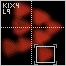

Background

It is the year 2122 AD, and Humans have started to colonize and exploit the immense natural resources of the solar system. The intensely competitive planetary economy has embraced an immeasurable amount of new technology in an effort to stay ahead of the competition--new technology such as nanobots: molecular sized robots with incredible computational powers. They are cheap to produce, cheap to transport, and are capable of organizing themselves in large groups in very intelligent ways. They can arrange themselves in huge flowing rivers of liquid, or spontaneously organize themselves into the working innards of complex machinery such as bombs, guns, and excavation equipment.
For the past 50 years, the nanobots have been instrumental in seeking out raw materials in the solar system (which have been all but depleted on Earth). The Moon, Mars and Venus are all now totally colonized by nanobot societies, and are being mined heavily.
Recently, however, strange things have been happening. The nanobots have been inexplicably evacuating their posts on Venus, Mars and the Moon and are all converging on one single point in the Solar System--the sixth moon of Jupiter, Europa.
Something about Europa has the nanobots extremely excited, and millions of companies are rushing to the small moon to be the first to discover its riches. Over its entire surface, nanobot wars are raging, and companies monitor and control the wars from satellites perched in orbit. When the nanobots land, they are accompanied by a production facility which is capable of continuously producing more and more nanobots. The nanobots travel across the surface of the moon by organizing themselves into the form of a liquid and flowing across the surface. They fight by organizing themselves into the form of solid projectile weapons and explosive devices.
You control your fleet of nanobots from your computer console, via data beamed back and forth to your company's orbiting satellite via a subspace communication link (java.net.SubspaceSocket is a package added to the java language in the year 2102). In your command, the nanobots will destroy--or be destroyed. Can you become the kingpin of Europa and control its immense riches?
Background - Objectives & Rules - Controls - Strategy - The Rating System - Club 75 - Credits - Log In & Play
Produced by Alex Nicolaou and Jay Steele

Java and other Java-based names are trademarks of Sun Microsystems, Inc., and refer to Sun's family of Java-branded technologies.